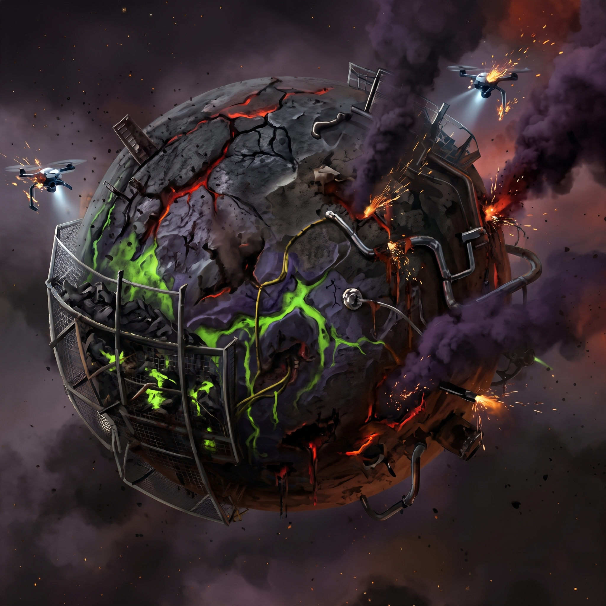

Planet Zero
清理程度 0% · 初始荒蕪

0%
0 pt
25%
25%
50 pt
50%
50%
200 pt
75%
75%
500 pt
100%
1000 pt
星球生態觀測儀
實時觀測中：隨減碳進度動態演化
大氣清潔度
0%
地表綠化率
0%
生態多樣性
瀕危停滯
🌿 今日綠色習慣
📸 光盤行動
0 Pts
拍攝空盤以獲取能量
📊 零碳總結
今日減碳總量
0.0
kg CO₂e
歷程累計減碳
0.0 kg
歷程累計點數
0 Pts
光盤行動 0.0 kg
尚無紀錄0.0 kg
習慣養成 0.0 kg
尚無紀錄0.0 kg
過去紀錄 (Cookie 儲存) 0 天
尚無歷史紀錄結算後存入